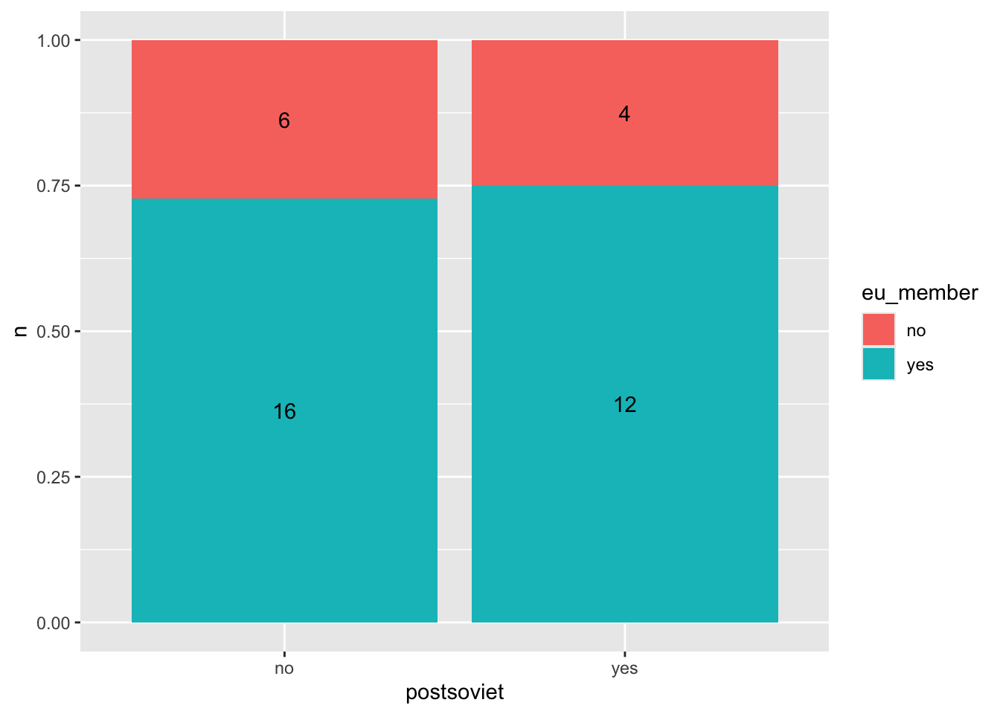

20 Vizualizace kategorických proměnných
V této kapitole si představíme nejčastější typy grafů pro vizualizaci kategorických proměnných.
20.1 Vizualizace jedné proměnné
Začněme vizualizací jedné kategoriální proměnné. Sloupcové grafy jsou pravděpodobně nejpopulárnějším typem vizualizace, se kterým se setkáme. Pro vytvoření sloupcového grafu je dobré si vybavit, ktteré proměnné se nachází na jednotlivých osách. Na ose X se nachází název kategorie, na ose Y poté frekvence výskyty. Vstupními daty pro funkci ggplot() bude tedy dataframe s těmito dvěmi proměnnými. Data budou reprezentovaná pomocí sloupců, které přidáme funkcí geom_col():
countries %>%
count(postsoviet) %>%
ggplot(aes(x = postsoviet, y = n)) +
geom_col()geom_bar()
Pokud je cílem našeho sloupcového grafu zobrazit (absolutní) četnost jednotlivých kategorií, můžeme nahradit geom_col() funkcí geom_bar(), která automaticky frekvenci výskytu všech skupin. Celý kód by vypadal následovně:
ggplot(countries,
aes(x = postsoviet)) +
geom_bar()Pokud bychom v grafu chtěli zobrazit relativní frekvenci výskytu kategorií, spočítáme percentuální zastoupení před vytvořením grafu.
countries %>%
count(postsoviet) %>%
mutate(freq = n / sum(n)) %>%
ggplot(aes(x = postsoviet, y = freq)) +
geom_col()Názvy kategorií nemusí být nutně na ose X. Pro otočení grafu o 90 stupňů stačí použít ggplot(aes(x = freq, y = postsoviet)).
Do grafu také můžeme přidat popisky jednotlivých sloupců. Nejdříve je nutné napojit proměnou obsahující frekvenci jednotlivých kategorií na dimenzi label. Popisky přidáme do grafu pomocí funkcec geom_text():
countries %>%
count(postsoviet) %>%
mutate(freq = n / sum(n)) %>%
ggplot(aes(x = postsoviet, y = freq, label = freq)) +
geom_col() +
geom_text()Výsledkem je funkční, ale nepříliš vzhledný graf. Aby náš graf byl použitelný, je nutné čísla v popiscích zaoukrouhlit a popisky samotné posunout tak, aby nepřekrývali sloupce. Zaokrouhlení dosáhneme pomocí funkce round(), kterou můžeme aplikovat přímo uvnitř funkce ggplot(). Pro posunutí popisků na vertikální ose je možné využít argument vjust uvnitř funkce geom_text(), k posouvání na horizontální ose poté slouží hjust. Hodnoty argumentů vjust a hjust jsou ve stejných jednotkách, jako proměnná na dané ose.
countries %>%
count(postsoviet) %>%
mutate(freq = n / sum(n)) %>%
ggplot(aes(x = postsoviet, y = freq, label = round(freq, 2)) ) +
geom_col() +
geom_text(vjust = -0.5)20.2 Vizualizace více proměnnýchných
Pro vizualizaci většího počtu proměnných pomocí sloupcových grafů zpravidla využíváme barev, pro rozlišení jednotlivých kategorií. Jedna kategorická proměnná bude tedy namapovaná na osu X, druhá poté na barvu sloupce. Frekvence dané kategorie bude na ose Y:
countries %>%
count(postsoviet, eu_member) %>%
ggplot(aes(x = postsoviet, fill = eu_member, y = n)) +
geom_col()
Všimněme si, že v našem grafu jsou nyní jednotlivé kategorie naskládány na sebe. Jejich pozici je možné upravovat pomocí argumentu position, pro který je výchozí hodnota position = "stack". První alternativou je argument = "fill", který je obdobný stack, ale velikost sloupců je standardizována. Graf tedy zobrazuje relativní frekvenci jednotlivých kategorií:
countries %>%
count(postsoviet, eu_member) %>%
ggplot(aes(x = postsoviet, fill = eu_member, y = n)) +
geom_col(position = "fill")Stejně jako u jednoduchého sloupcového grafu, i do skládáných grafů je možné přidat popisky. Je ale nutné sladit jejich pozici s pozicí sloupců. Pokud jsme jako sloupců zvolili position = "fill", je nutné stejnou pozici zvolit i pro popisky. Také je nutné popisky zarovnat doprostřed jednotlivých dlaždic. Obojího docíleme pomocí position = position_fill(vjust = 0.5):
countries %>%
count(postsoviet, eu_member) %>%
ggplot(aes(x = postsoviet, fill = eu_member, y = n, label = n)) +
geom_col(position = "fill") +
geom_text(position = position_fill(vjust = 0.5))
Druhou alternativou je position = "dodge", pomocí které je možné vyskládat jednotlivé sloupce vedle sebe. Obdobně jako u předchozí varianty přidáme popisky, tentokrát ale pomocí position_dodge(). jednotlivé sloupce jsou od sebe zpravidla vzdálené jednu “jednotku”. Stejně jako u jednoduchého grafu také popisky posuneme lehce nahoru:
countries %>%
count(postsoviet, eu_member) %>%
ggplot(aes(x = postsoviet, fill = eu_member, y = n, label = n)) +
geom_col(position = "dodge") +
geom_text(position = position_dodge(width = 1), vjust = -0.5)
Alternativou klasických sloupcových grafů je heat map. Pro vytvoření heat mapy nejdříve získáme frekvenci výskytu kombinací jednotlivých kategorií, obdobně jako když jsme vytvářeli sloupcový graf. Poté jen napojíme jednu z kategorických proměnných na osu X, druhou na osu Y a frekvenci výskytu na barvu jednotlivých “dlaždic”. Graf dokončíme pomocí funkce geom_tile(). Stejně jako v předchozích grafech můžeme přidat popisky pro jednotlivé dlaždice pomocí geom_text().
V případě, že se v naši datech nevyskytují některé kombinace kategorií, je nutné proměnné převést na faktory a do funkce count() přidáme argument .drop = FALSE. Pokud bychom to neudělali, objevily by se v naší heat mapě mezery.
countries %>%
mutate(across(c(maj_belief, postsoviet),
as.factor)) %>%
count(postsoviet, maj_belief, .drop = F) %>%
ggplot(aes(x = postsoviet, y = maj_belief,
label = n, fill = n)) +
geom_tile() +
geom_text(color = "white")